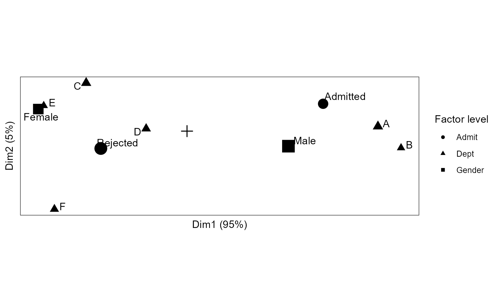

Functionality for multiple and joint correspondence analysis ('mjca') objects
methods-ca-mjca.RdThese methods extract data from, and attribute new data to,
objects of class "mjca" from the ca package.
Usage
# S3 method for class 'mjca'
as_tbl_ord(x)
# S3 method for class 'mjca'
recover_rows(x)
# S3 method for class 'mjca'
recover_cols(x)
# S3 method for class 'mjca'
recover_inertia(x)
# S3 method for class 'mjca'
recover_conference(x)
# S3 method for class 'mjca'
recover_coord(x)
# S3 method for class 'mjca'
recover_aug_rows(x)
# S3 method for class 'mjca'
recover_aug_cols(x)
# S3 method for class 'mjca'
recover_aug_coord(x)Value
The recovery generics recover_*() return core model components, distribution of inertia,
supplementary elements, and intrinsic metadata; but they require methods for each model class to
tell them what these components are.
The generic as_tbl_ord() returns its input wrapped in the 'tbl_ord'
class. Its methods determine what model classes it is allowed to wrap. It
then provides 'tbl_ord' methods with access to the recoverers and hence to
the model components.
Single, multiple, and joint CA
Greenacre (2007) proposes joint correspondence analysis (JCA) as a counterpart to classical multiple correspondence analysis (MCA). These, together with classical correspondence analysis (CA), are implemented in the ca package.
References
Greenacre MJ (2007) Correspondence Analysis in Practice, Second Edition. Boca Raton: Chapman & Hall/CRC, ISBN 978-1-58488-616-7. http://www.carme-n.org/?sec=books2
See also
Other methods for singular value decomposition-based techniques:
methods-ade4,
methods-ca-ca,
methods-candisc-cancor,
methods-lpca,
methods-nipals-empca,
methods-nipals-nipals,
methods-pma-cca,
methods-pma-spc
Other models from the ca package:
methods-ca-ca
Examples
# table of admissions and rejections from UC Berkeley
class(UCBAdmissions)
#> [1] "table"
head(as.data.frame(UCBAdmissions))
#> Admit Gender Dept Freq
#> 1 Admitted Male A 512
#> 2 Rejected Male A 313
#> 3 Admitted Female A 89
#> 4 Rejected Female A 19
#> 5 Admitted Male B 353
#> 6 Rejected Male B 207
if (require(ca)) {# {ca}
# perform multiple correspondence analysis
UCBAdmissions %>%
ca::mjca() %>%
as_tbl_ord() %>%
# augment profiles with names, masses, distances, and inertias
augment_ord() %>%
print() -> admissions_mca
# recover row and column profiles
head(get_rows(admissions_mca))
get_cols(admissions_mca)
# column-standard biplot of factor levels
admissions_mca %>%
ggbiplot() +
theme_bw() + theme_biplot() +
geom_origin() +
# geom_rows_count() +
geom_cols_point(aes(shape = factor, size = mass)) +
geom_cols_text_repel(aes(label = level), show.legend = FALSE) +
scale_size_area(guide = "none") +
labs(shape = "Factor level")
# column-principal biplot of factor levels
admissions_mca %>%
confer_inertia("colprincipal") %>%
ggbiplot() +
theme_bw() + theme_biplot() +
geom_origin() +
# geom_rows_point(stat = "sum") +
geom_cols_point(aes(shape = factor, size = mass)) +
geom_cols_text_repel(aes(label = level), show.legend = FALSE) +
scale_size_area(guide = "none") +
labs(shape = "Factor level")
}# {ca}
#> Warning: 'as.is' should be specified by the caller; using TRUE
#> Warning: 'as.is' should be specified by the caller; using TRUE
#> Warning: 'as.is' should be specified by the caller; using TRUE
#> # A tbl_ord of class 'mjca': (4526 x 2) x (10 x 2)'
#> # 2 coordinates: Dim1 and Dim2
#> #
#> # Rows (standard): [ 4526 x 2 | 4 ]
#> Dim1 Dim2 | name mass dist inertia
#> | <chr> <dbl> <dbl> <dbl>
#> 1 3.33 2.68 | 1 1 0.000221 0.00672 9.97e-9
#> 2 3.33 2.68 | 2 2 0.000221 0.00672 9.97e-9
#> 3 3.33 2.68 | 3 3 0.000221 0.00672 9.97e-9
#> 4 3.33 2.68 | 4 4 0.000221 0.00672 9.97e-9
#> 5 3.33 2.68 | 5 5 0.000221 0.00672 9.97e-9
#> # ℹ 4,521 more rows
#> #
#> # Columns (standard): [ 10 x 2 | 6 ]
#> Dim1 Dim2 | name factor level mass dist
#> | <chr> <chr> <chr> <dbl> <dbl>
#> 1 1.08 0.975 | 1 Admit:… Admit Admi… 0.129 0.792
#> 2 -0.681 -0.617 | 2 Admit:… Admit Reje… 0.204 0.502
#> 3 -1.18 0.786 | 3 Gender… Gender Fema… 0.135 0.784
#> 4 0.802 -0.536 | 4 Gender… Gender Male 0.198 0.534
#> 5 1.51 0.167 | 5 Dept:A Dept A 0.0687 1.22
#> 6 1.69 -0.596 | 6 Dept:B Dept B 0.0431 1.58
#> 7 -0.797 1.72 | 7 Dept:C Dept C 0.0676 1.18
#> 8 -0.323 0.0886 | 8 Dept:D Dept D 0.0583 1.26
#> 9 -1.13 0.908 | 9 Dept:E Dept E 0.0430 1.54
#> 10 -1.05 -2.78 | 10 Dept:F Dept F 0.0526 1.39
#> # ℹ 1 more variable: inertia <dbl>
